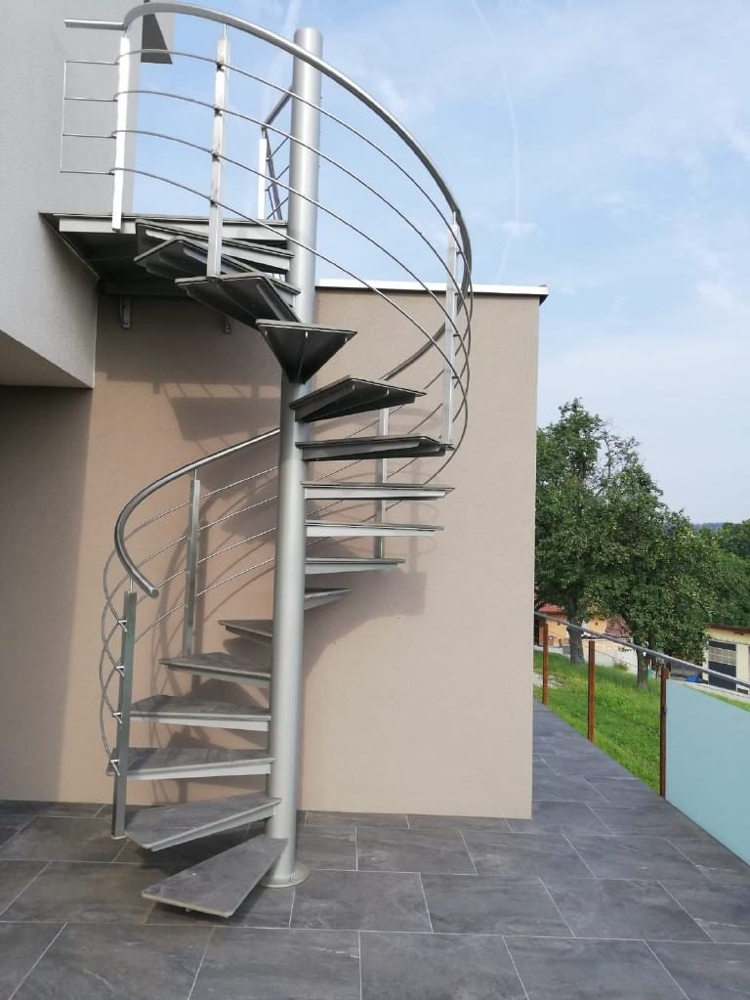
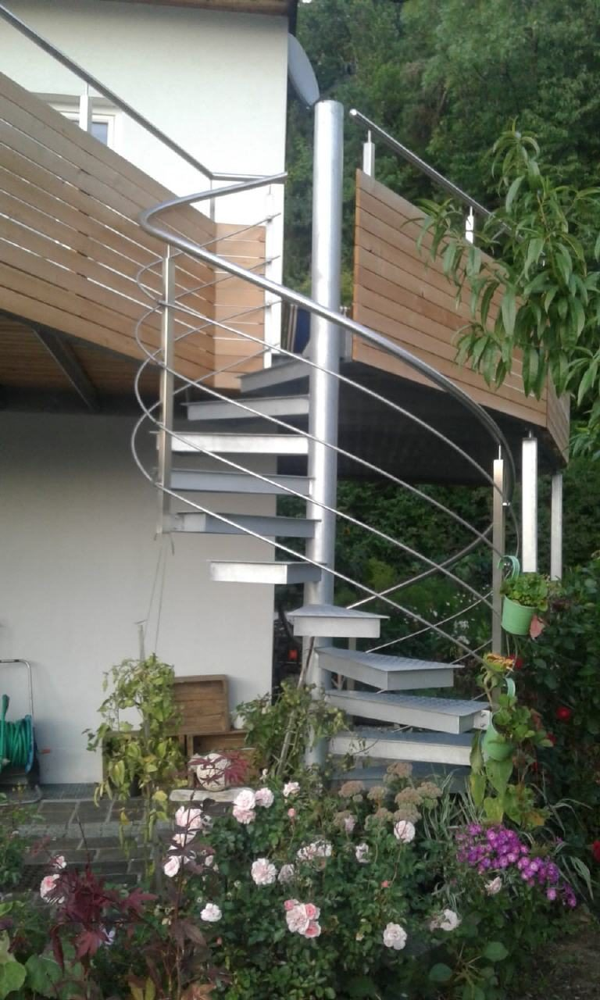
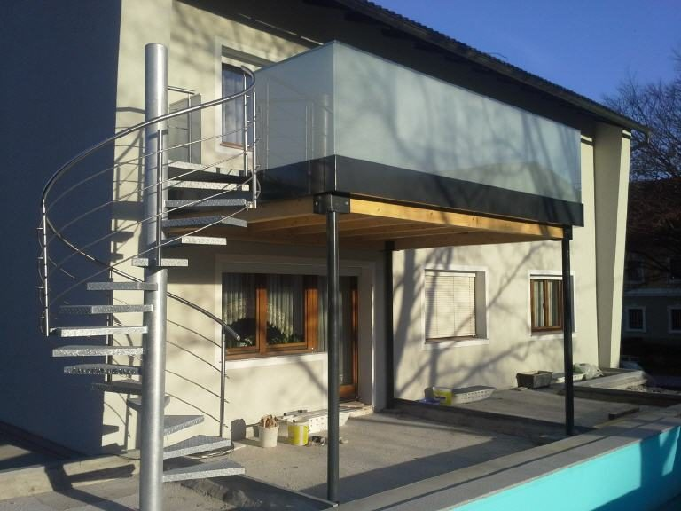
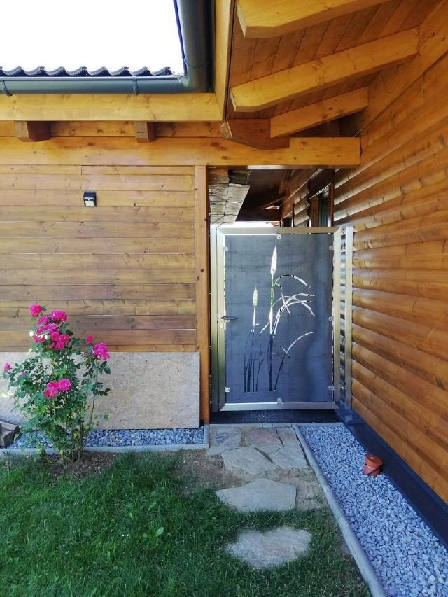

Metallbau & Bauschlosserei seit 2005
Ihr Spezialist für Metallkonstruktionen verschiedenster Art
Wir arbeiten mit Alu, Niro und Stahl – auch in Kombination mit Holz oder Glas. Geländer, Stiegen, Vordächer, Zäune und individuelle Stahlkonstruktionen, gefertigt und montiert von Thomas Kraus & Team.
Angebot anfordern Projekte ansehen
- Alu
- Niro
- Stahl
- + Holz
- + Glas
Leistungen
Was wir für Sie fertigen
Geländer
Für Treppe, Balkon, Terrasse – als Stabgeländer, mit Seilzügen oder mit Glasfüllung.
Stiegen & Balkone
Wendeltreppen, gerade Stiegen und komplette Balkonkonstruktionen inklusive Unterbau.
Vordächer & Überdachungen
Stahlkonstruktionen mit Glas oder Blech – für Eingang, Terrasse und Hof.
Carports
Stabile Metallcarports, passend zum Haus geplant und vor Ort montiert.
Alu-Gartenzäune
Wartungsarme Zäune und Sichtschutzelemente aus Aluminium.
Garten- & Schiebetore
Auch elektrisch betrieben, auf Wunsch mit individuell gestalteter Füllung.
Stahlkonstruktionen
Individuelle Tragwerke, Rahmen und Sonderbauteile nach Plan oder Skizze.
Außergewöhnliches
Wir sind offen für Sonderwünsche und erfüllen gerne Ihre individuellen Ideen.
Der Betrieb
Klein, aber fein – und der Chef arbeitet mit
Unser Betrieb arbeitet seit 2005 in den Bereichen Metallbau und Bauschlosserei und ist spezialisiert auf die Fertigung und Montage handwerklicher Metallarbeiten am Bau.
Firmenleiter Thomas Kraus arbeitet als Chef auch persönlich mit – handwerklich, bei kreativen Ideen und Entwürfen und im Büro, etwa bei der Angebotsstellung. Drei erfahrene Metall-Facharbeiter unterstützen ihn bei allen Bauvorhaben, im Büro sitzt Tina Kraus.
- Kreativität & gute IdeenWir entwerfen mit, wenn noch nichts geplant ist.
- Faire PreiseAlle Aufträge werden zu fair kalkulierten Preisen durchgeführt.
- FlexibilitätGrößere und kleinere Projekte, privat wie gewerblich.
- Pünktlichkeit & VerlässlichkeitTermine, die halten – in der Region und in ganz Österreich.
- ErreichbarkeitWir sind für unsere Kunden immer gut erreichbar.
Einblicke
Arbeiten aus der Werkstatt



Auftraggeber
Von Lawog bis Lidl
Unsere Auftraggeber sind neben Privatkunden auch öffentliche Einrichtungen und Firmen, Architekten, Planungsbüros und Baufirmen. Egal ob größere oder kleinere Projekte, ob privat oder gewerblich, ob in der Region oder in anderen Teilen Österreichs – alle Aufträge werden verlässlich durchgeführt.
- Norikum Bau
- GWB-Bau
- Lawog Wohnbau
- ISG Wohnbau
- Betreubares Wohnen Sattledt
- Wels Strom
- Molto Luce
- Lidl Markt Murau
- Resch & Frisch
- Betten Reiter
- Autohaus Peugeot Linz-Leonding
- Autohaus Eder Weyregg
- Bäckerei Nöhammer
Sie haben eine Idee? Wir machen ein Angebot.
Schicken Sie uns Maße, Fotos oder eine Skizze – oder rufen Sie einfach an. Wir sind gut erreichbar.